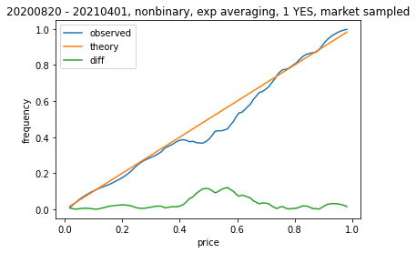
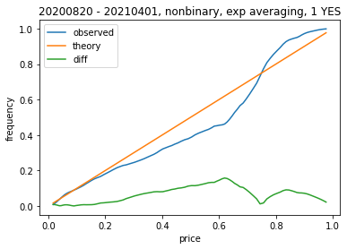
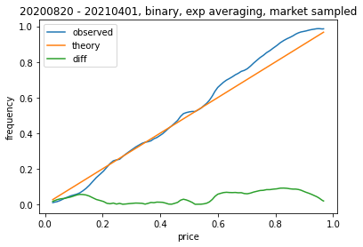
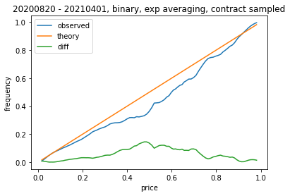
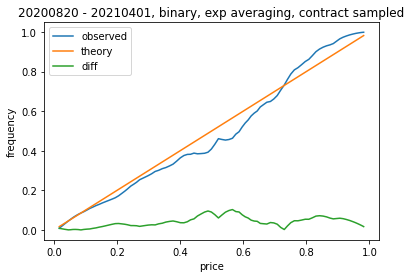
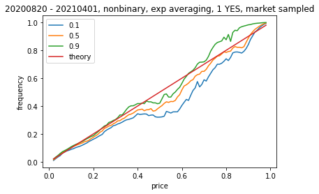

Existing work on whether prediction markets are well calibrated.
DO PREDICTION MARKETS PRODUCE WELL-CALIBRATED PROBABILITY FORECASTS?. Page, Clemen 2013
They use the following approach:
For adapting to available predictit market data. We can:
We try to sample in a method similar by simpler compare to Page, Clemen by using an exponential weighting function on each of 100 discrete price points to compute the emperical resolution frequencies. We look at both sampling on active contracts on each day, and also take their approach of collecting a fixed number of samples per market. This normalizes for markets with different # of contracts and trading days.
Initial results on nonbinary markets suggests there is a significant midrange segment where long contracts are overpriced.
 
That being said, a significant portion of the data came from Biden cabinet markets, where many cabinet picks were not confirmed. These events were highly correlated, and removing them from the picture weakens the correlation.
We start to see the trend of contracts with price >0.8 being underpriced.
Binary markets seem reasonable well calibrated with the exception of tail probabilities. Probably combination of large “risk-free” rate as well as 2020 election markets being Trump conspiracy biased.
 
Finally, it seems like the explanation for the difference between market sampled and day sampled has more to do with the normalization over number of days rather than normalizing over # of contracts. (should say nonbinary)
 
Confidence intervals (resampling half of markets, assumes markets reasonable independent)
